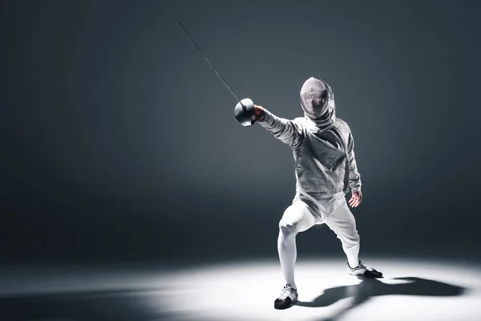

Comment se passe les entrainements a l'éscrime ?

Echauffement généralisé : course, sautillements, pas chassés, épaules, bras…. - Etirements : passage en fente avant puis latérale, fessier, quadriceps-ischios…. A chaque séance il y aura un échauffement généralisé qui deviendra de plus en plus spécifique.
C'est durant le siècle de Saint Louis qu’apparaissent dans les écrits les premiers maîtres d'armes professionnels. On reconnaît alors que manier l’épée nécessite un enseignement à la fois théorique et pratique, et cet enseignement est recherché par la noblesse, qui risque fréquemment sa vie sur le champ de bataille, et qui est la seule à pouvoir prétendre à la possession d'une belle épée de qualité.
Retour en arrière.
Accueil